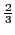
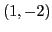

Next: Exercises Up: Simple applications of the Previous: Simple applications of the Contents Index
It was shown in §4.9, that if
then
At points such as A, B, G, where the curve (or tangent) is
perpendicular to the axis of  ,
,
therefore
.
,
,
therefore
.
At points such as E, where the curve is rising6.1,
(a) Find  when
when  .
.
(b) Find  when
when  .
.
(c) Find the points where the curve is parallel to the  -axis.
-axis.
(d) Find the points where
 .
.
(e) Find the points where the curve is parallel to the line .
Differentiating, = slope at any point.
(a)
 ;
therefore
;
therefore
 .
.
(b) ; therefore .
(c)
,
;
therefore
. Solving this equation,
we find that  or
or  , giving points C and D where the
curve (or tangent) is parallel to the
, giving points C and D where the
curve (or tangent) is parallel to the  -axis.
-axis.
(d)
 ,
;
therefore
. Solving, we get
, giving two points where the slope of
the curve (or tangent) is unity.
,
;
therefore
. Solving, we get
, giving two points where the slope of
the curve (or tangent) is unity.
(e) Slope of line = ; therefore . Solving, we get , giving points E and F where curve (or tangent) is parallel to .
Since a curve at any point has the same direction as its tangent at that point, the angle between two curves at a common point will be the angle between their tangents at that point.
(A) ,
(B) .
Solution. Solving simultaneously, we find the points of intersection to be and . This can be verified ``by hand'' or using the SAGE solve command:
[fontsize=\small,fontfamily=courier,fontshape=tt,frame=single,label=\sage]
sage: x = var("x")
sage: y = var("y")
sage: F = x^2 + y^2 - 4*x - 1
sage: G = x^2 + y^2 - 2*y - 9
sage: solve([F == 0,G == 0],x,y)
[[x == 1, y == -2], [x == 3, y == 2]]
Using (A), formulas in §5.35 give . Using (B), formulas in §5.35 give . Therefore,
[fontsize=\small,fontfamily=courier,fontshape=tt,frame=single,label=\sage]
sage: x = var("x")
sage: y = function("y",x)
sage: F = x^2 + y^2 - 4*x - 1
sage: F.diff(x)
2*y(x)*diff(y(x), x, 1) + 2*x - 4
sage: solve(F.diff(x) == 0, diff(y(x), x, 1))
[diff(y(x), x, 1) == (2 - x)/y(x)]
sage: G = x^2 + y^2 - 2*y - 9
sage: G.diff(x)
2*y(x)*diff(y(x), x, 1) - 2*diff(y(x), x, 1) + 2*x
sage: solve(G.diff(x) == 0, diff(y(x), x, 1))
[diff(y(x), x, 1) == -x/(y(x) - 1)]
The formula for finding the angle between two lines whose
slopes are  and
and  is
is
david joyner 2008-08-11
![% latex2html id marker 48541
\includegraphics[height=5cm,width=7cm]{tangent-examples2.eps}](img1538.png)